虚拟场景建立与漫游
系统为C/S环境下基于VEGA的三维列车视景仿真系统，包括以下部分: 1)根据实际的地理信息数据构建列车运行的三维场景：通过Creator进行三维建模，如列车、铁轨、站台、桥梁、树木、地形和其他人文景观。 2)构建列车运行大规模虚拟场景：利用Creator的外部引用技术将各个模型集成到一个场景中，结合三维场景的优化技术，利用三维视景驱动软件Vega，完成大规模三维场景的实时驱动显示。 3)根据实际列车运行的数据实现列车运行的控制：运用Vega三维场景开发软件，结合VC++6.0，建立三维视景仿真系统与列车运行控制系统的实时通信，实现列车运行控制系统对三维场景中列车运行的实时控制以及铁路设备状态的操作。 如信号机状态显示、速度控制、视点切换、状态信息显示、天气变化和对控制台仪表的操作等。 4)通过多通道画面拼接，增强真实感
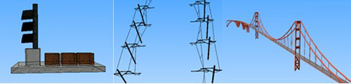
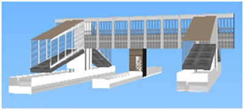
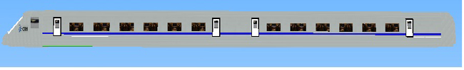
列车运行相关模型组图
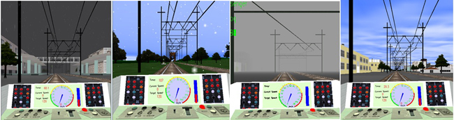
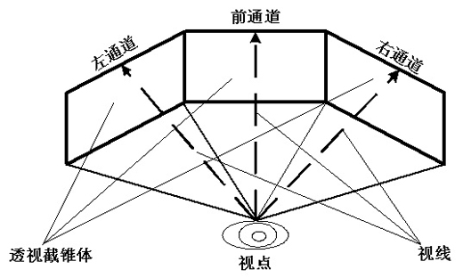
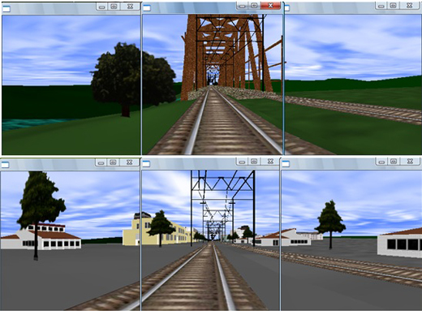
多通道画面拼接原理及效果
-
基于GIS的虚拟校园系统
将WebGIS和VRML技术相结合，实现了B/S模式的西南交通大学虚拟数字校园，综合利用了虚拟现实、地理信息系统、Java、数据库等多种技术，不仅能提供具有交互式和沉浸感的校园漫游，还能提供地理信息导览搜寻等功能。
本系统选用了VRML技术完成了校园静态场景的模型构建工作，较真实地展现了校园风貌。利用WebGIS技术提供二维地图的动态导航，校园信息三维查询等多种交互功能。实现了在Internet环境下，对西南交通大学犀浦校区多方位地展示。
本系统主要实现了以下三个方面的功能：
1)根据实际的地理信息数据构建虚拟校园三维场景：通过VRML进行三维场景建模，并结合JAVA实现了场景的漫游与交互功能，较真实地模拟了校园环境。
2)运用Mapinfo设计校园二维平面地图；结合MapXtreme for Java开发包，在Web环境下，实现了三维场景与二维地图的同步漫游显示；三维场景与二维地图的关联查询。
3)构建了GPS漫游路径数据库，实现了漫游路径的查询与回放。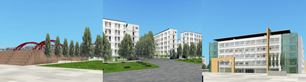
虚拟校园组图
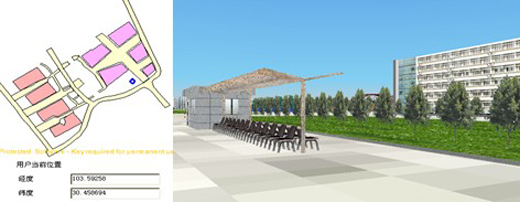
同步定位组图
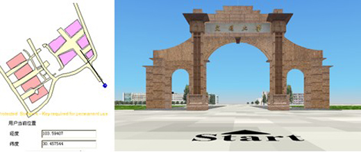
漫游线路组图1
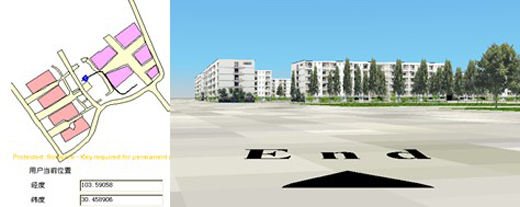
漫游线路组图2
-
三维场景的建模和优化
由于本系统中场景规模较大，但与铁路相关的模型只有列车、铁轨、信号机、车站、接触网、隧道等。因此在建模过程中采用分层规划设计的方法，主要分为铁路线路模型、自然人文景观和地形。根据不同层次的景物特点及其重要程度，选用不同的建模方法与优化方法。下面对各个层次建模与优化方法做一个简单的介绍：
铁路线路模型, 主要采用了在Creator中几何建模和纹理贴图相结合的方法，线路模型的外观结构使用几何建模得到，这样可以较好地表现模型对象的层次轮廓与立体感。而对于小细节部分，使用纹理贴图的方法。这样既能够保证建筑的三维视觉效果，又避免了场景构建过于精细影响整体的渲染速度。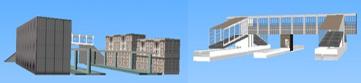
几何建模和纹理贴图结合建立的车站
自然人文景观，包括建筑物、桥梁、河流、草坪、山脉等。对建筑物和桥梁的建模也采用几何建模和纹理贴图相结合的方法；而河流和草坪主要采用纹理贴图的方法实现；在地形中勾勒出山脉。
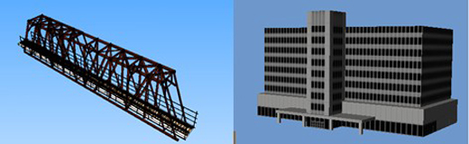
人文景观模型
自然人文景观，包括建筑物、桥梁、河流、草坪、山脉等。对建筑物和桥梁的建模也采用几何建模和纹理贴图相结合的方法；而河流和草坪主要采用纹理贴图的方法实现；在地形中勾勒出山脉。
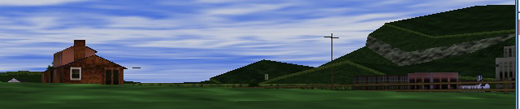
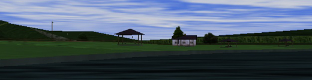
地形模型
-
磁悬浮列车设计
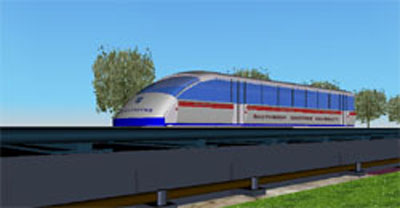
车头设计:用突出造型（Extrusion）设计流线型曲面，分别设计放样图形和放样路径，最后进行曲面组合；
-
树木设计
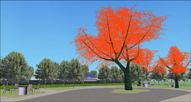
1)树设计分为：叶片设计、树干/树枝设计；
2)叶片设计：利用IndexedFaceSet和像素纹理贴图PixelTexture来设计, 先用C语言随机函数和文件函数产生相关数据，然后将数据引用到像素纹理节点中；
3)树干设计：先用突出造型（Extrusion）和图片纹理贴图（ImageTexture） 设计一段树干/树枝，再通过缩放、旋转、平移等组合成树的形体。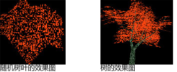